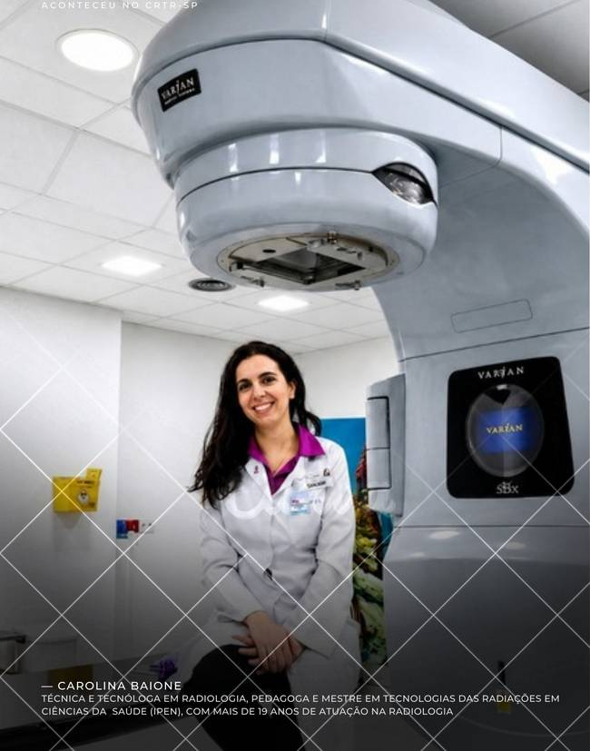

ACONTECEU NO CRTR-SP
— CAROLINA BAIONE
Técnica e Tecnóloga em Radiologia, Pedagoga e Mestre em Tecnologias das Radiações em Ciências da Saúde (IPEN), com mais de 19 anos de atuação na Radiologia
ALÉM DA IMAGEM · CORED-SP · CRTR-SP · 17